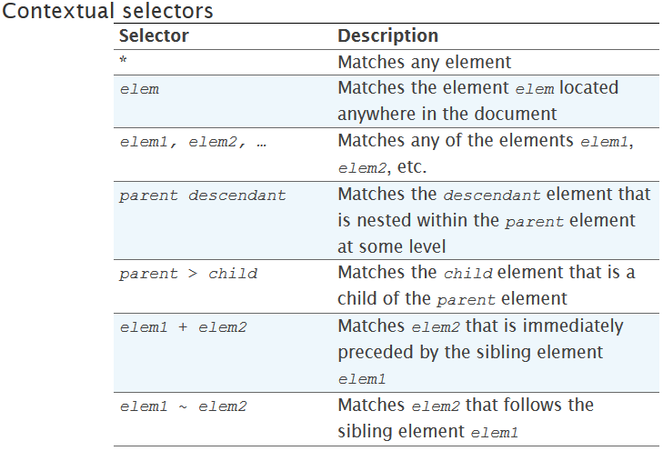
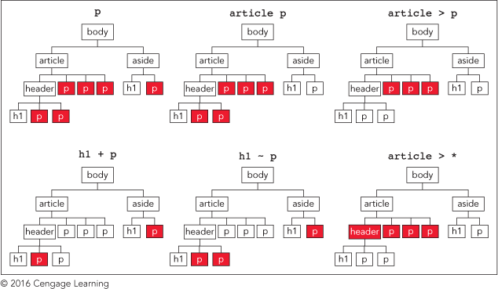

 What was big to me is the fact about how you can specifcially match an element when there are the same elements in the document. An exmaple could be that you would like to modify the element hyperlink in the navigation of your site but not the article itself. A reference for matching this content could be in the picture below.
Another big one is the difference between ID and Class Selectors.
| Title | Description | Example in HTML | Example in CSS |
|---|---|---|---|
| ID | The ID attribute is used only on one element. |
(h1 id="hello") This is an example (/h1)
|
h1#hello
|
| Class | The class element is used on multiple elements. |
(h1 class="hello") This is an example (/h1)
|
h1.hello
|
Block Level elements all follow the Box Model: